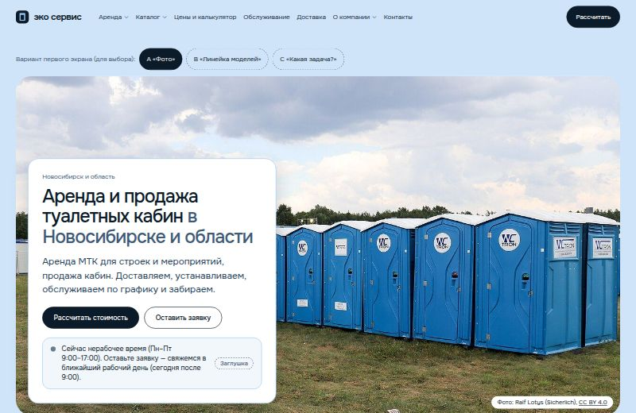
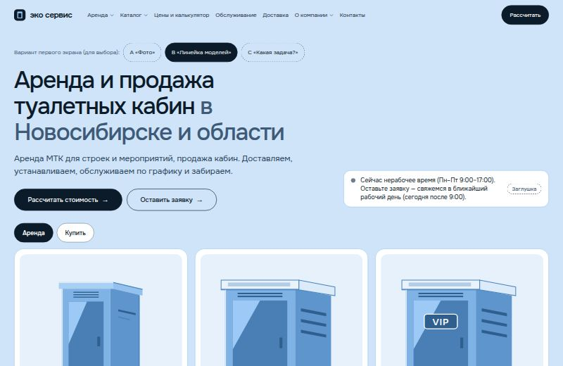
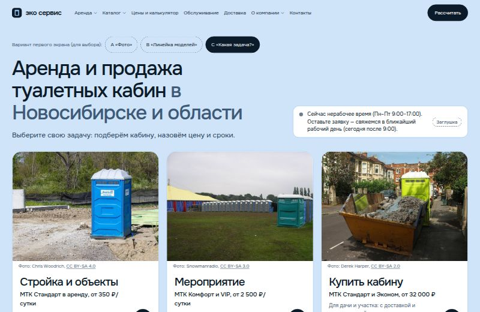
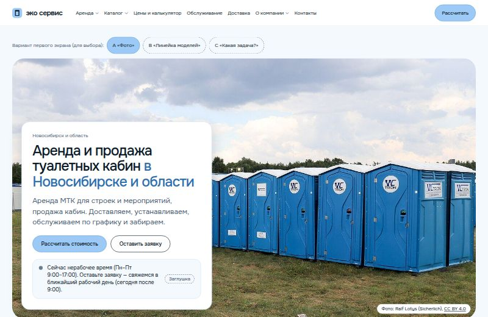
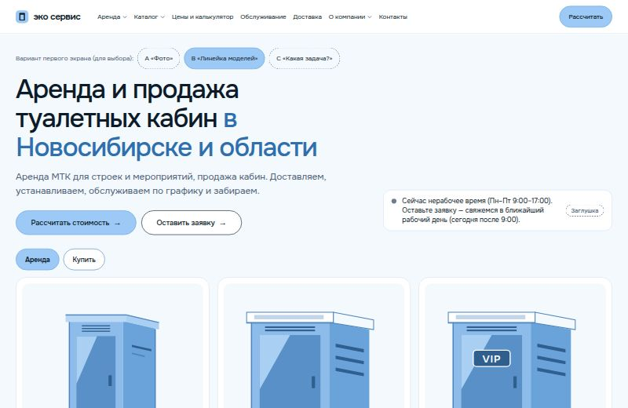
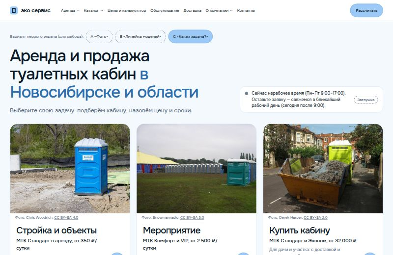

Версия 2, вторая итерация: без 3D, новый ассортимент МТК. Выбор оформления и первого экрана
ЭКО СЕРВИС НОВОСИБИРСК: две темы, три варианта первого экрана
Структура, тексты, калькулятор и формы одинаковые. Различаются палитра (тема Е тёмно-синие панели, тема F всё светлое) и первый экран главной: A «Фото», B «Линейка моделей», C «Какая задача?». Всё, что ниже первого экрана, у вариантов общее. Сайты открываются двойным кликом, без сервера.
Е «Светло-голубой»
Голубая шапка и герой, тёмно-синие блоки: карточки, расчёт, отзывы, подвал.

A «Фото»Крупное фото кабин на объекте, карточка предложения и полоса цифр.Открыть вариант
B «Линейка моделей»Четыре модели плитками с переключателем «Аренда / Купить».Открыть вариант
C «Какая задача?»Три крупные карточки: стройка, мероприятие, покупка.Открыть вариантF «Воздушный»
Всё светлое: белый и бледно-голубой, без тёмных блоков.

A «Фото»Крупное фото кабин на объекте, карточка предложения и полоса цифр.Открыть вариант
B «Линейка моделей»Четыре модели плитками с переключателем «Аренда / Купить».Открыть вариант
C «Какая задача?»Три крупные карточки: стройка, мероприятие, покупка.Открыть вариантДанные на обоих сайтах помечены «Заглушка». Фотографии иллюстративные (стоковые, Wikimedia Commons), их нужно заменить снимками компании. Авторы и условия использования указаны под каждым фото и на странице «О компании».